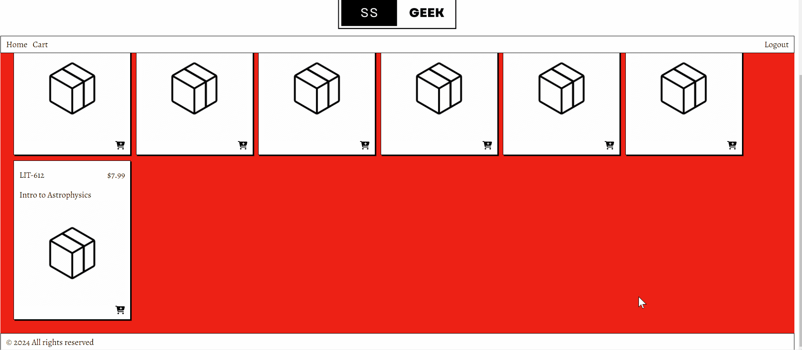

Revamp organization and accessibility of important public documents, services and information about the community. Perform on-going website maintenance, updates and optimization. Create content and edit content contributed by other users.


As a Software Developer and Educator with international professional experience, I bring tenacity and a strong work ethic. I've refined valuable skills in effective communication, problem-solving, and adaptability. I'm keen to utilize my skills, knowledge and passion to make a positive difference in people's lives.
What I'm up to lately: I continue to work with the Ostrander IT Committee to update and maintain the website and provide IT support to village officials and residents. Recent improvements:
Future updates will entail the implementation of a payment processing platform to enable residents to make bill payments online.
Revamp organization and accessibility of important public documents, services and information about the community. Perform on-going website maintenance, updates and optimization. Create content and edit content contributed by other users.
A full-stack, online storefront application.
An app for pet owners to keep track of a medication schedule and routine. Inspired by my beloved elderly dog, Nugget.
a REST API to support an online shopping cart application, which I later built on to complete my web shop application.